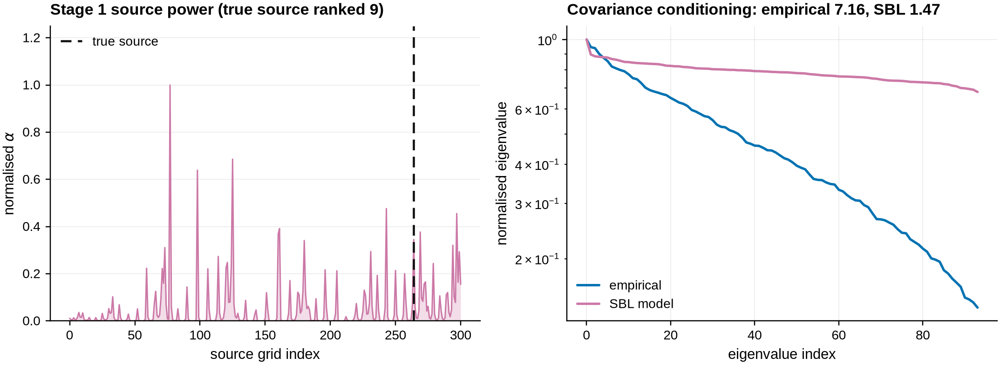
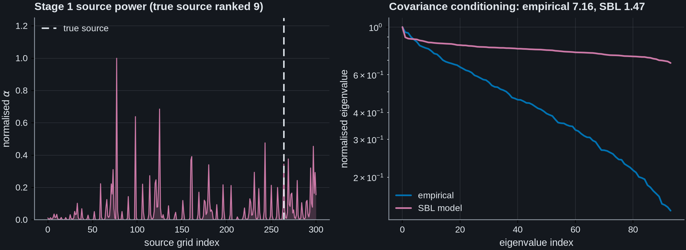
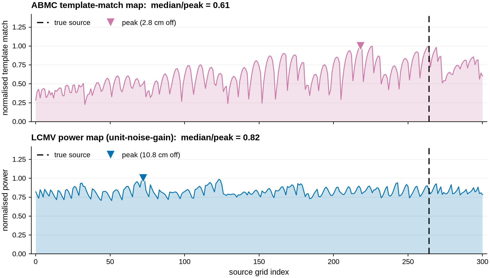
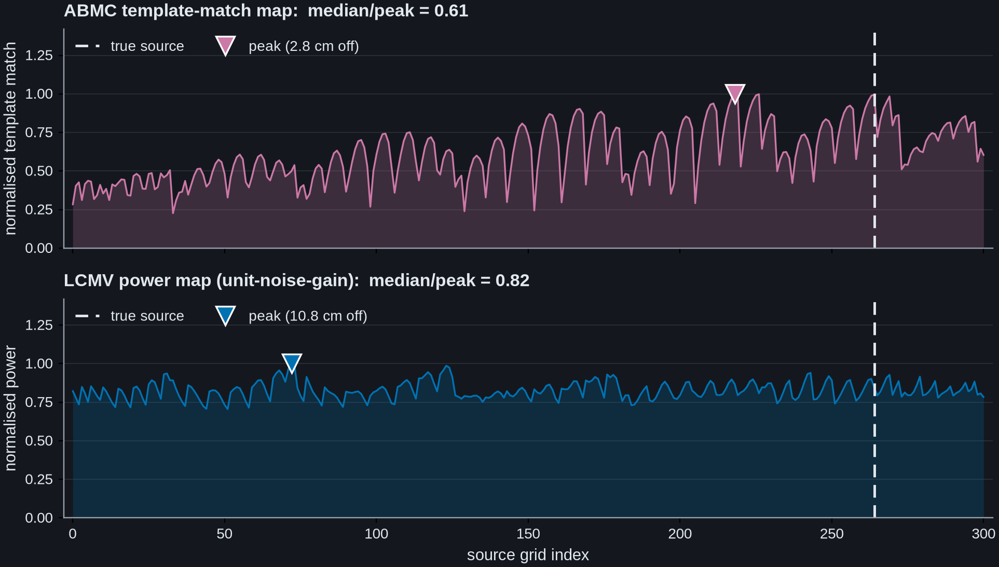
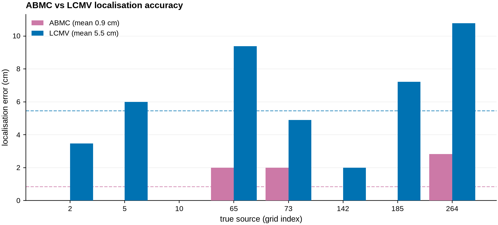
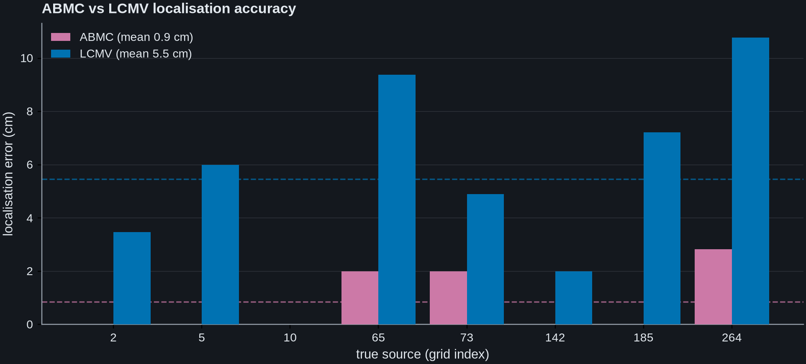
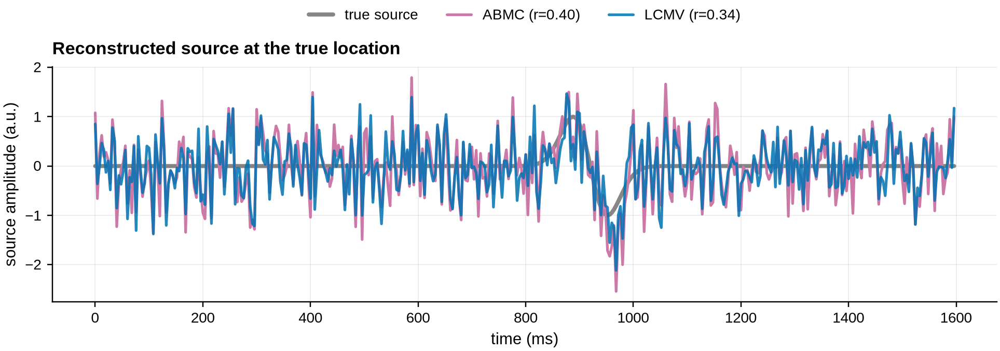
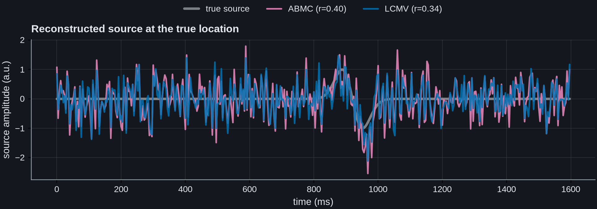
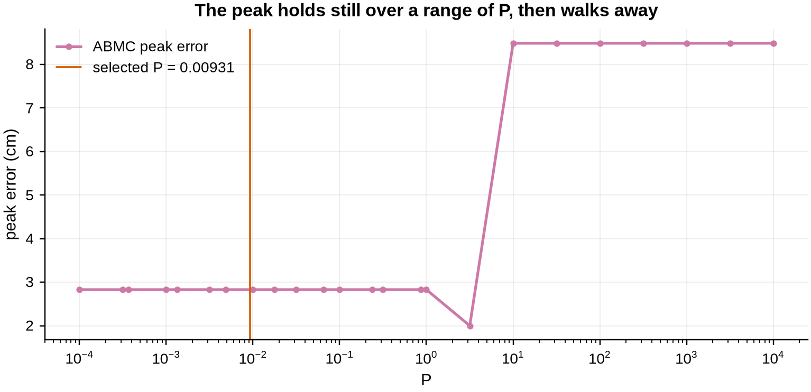
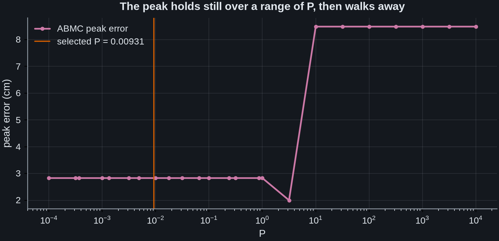

Note
Go to the end to download the full example code.
ABMC: localising spike-like sources#
The adaptive Bayesian beamformer with multiple constraints (ABMC) targets low-power, spike-like sources that a power-based beamformer localises poorly: epileptic interictal discharges and delayed responses to stimulation.
The reason is that the two methods optimise different things. An LCMV beamformer scans for output power, so at low SNR its map is driven by whatever carries the most variance. ABMC instead scans for agreement with a known waveform: its localiser is \(|\mathrm{corr}(\mathbf{w}^{\mathsf T}\mathbf{X}, u)|\), the correlation between the beamformer output and a supplied template, at the best lag. When the target is a transient of known morphology buried in noise, that is a far more selective statistic than power.
This example shows four things on a spherical EEG model:
Localisation maps at a single source: ABMC’s template-match map versus a noise-normalised LCMV power map across the whole grid.
Accuracy across the volume: the same spike placed at eight locations, with the ABMC and LCMV localisation error at each.
Reconstructed source: the recovered time course from both filters.
A dictionary of templates:
make_abmc_dictionary()localising several desired waveforms in one call.
The LCMV comparator throughout is mne.beamformer.make_lcmv() with
weight_norm='unit-noise-gain'. That normalisation matters: the unnormalised
unit-gain output power \(1/(\mathbf{g}^{\mathsf T}\mathbf{R}^{-1}\mathbf{g})\)
scales as \(\|\mathbf{g}\|^{-2}\), so it is driven by wherever the leadfield
happens to be weakest rather than by where the source is. On this grid, with a
white covariance, it correlates with \(\|\mathbf{g}\|^{-2}\) at 1.000 and
peaks on the weakest-leadfield point (index 4 of 301) – not on the most
superficial one (index 106), which it never picks. A different covariance moves
the peak, but it keeps tracking the leadfield rather than the data. Comparing
against that would flatter ABMC for the wrong reason.
# Authors: Sepehr Shirani <sepehrshirani@gmail.com>, <s.shirani@ucl.ac.uk>
# Muzhi Wang <muzhi.wang@ucl.ac.uk>
# Jade Serfaty <jade.serfaty.17@ucl.ac.uk>
# License: BSD-3-Clause
import matplotlib.pyplot as plt
import mne
import numpy as np
from mne.beamformer import apply_lcmv_cov, make_lcmv
from advance_beamlab import (
abmc_stability_curve,
make_abmc,
make_abmc_dictionary,
sbl_covariance,
)
mne.set_log_level("ERROR")
# The gallery applies the project-wide journal style (see doc/conf.py), whose
# colour cycle is the Wong colourblind-safe palette. Across the gallery C0 is the
# established/baseline method and C3 the method being introduced.
C_ABMC, C_LCMV, C_TRUE = "C3", "C0", "#111111"
def spike(n, t0, width=8.0):
"""A unit-amplitude biphasic (derivative-of-Gaussian) spike."""
t = np.arange(n)
x = -(t - t0) / width * np.exp(-((t - t0) ** 2) / (2 * width**2))
return x / np.abs(x).max()
def lcmv_power_map(data, info, fwd, reg=0.05):
"""A noise-normalised LCMV power map, one value per grid point.
Uses MNE's own beamformer with ``weight_norm='unit-noise-gain'``, which
removes the depth bias of the raw unit-gain output power and is what an
expert would use as the power-based comparator here.
``data`` is copied before it is wrapped, and that copy is load bearing.
:class:`mne.EpochsArray` applies the info's projectors to the array it is
handed, in place and without copying it first, so handing ``data`` straight
in would silently average-reference the caller's own array. Every later
section of this example would then be reading a different array from the one
ABMC was given a line earlier.
"""
cov = mne.compute_covariance(
mne.EpochsArray(data[np.newaxis].copy(), info, verbose=False),
method="empirical",
verbose=False,
)
filters = make_lcmv(
info,
fwd,
cov,
reg=reg,
noise_cov=None,
pick_ori=None,
weight_norm="unit-noise-gain",
verbose=False,
)
return apply_lcmv_cov(cov, filters, verbose=False).data[:, 0]
A spherical EEG forward model (fixed orientation -> scalar leadfield). An average reference projector is mandatory for inverse modelling in MNE.
montage = mne.channels.make_standard_montage("standard_1020")
ch = list(dict.fromkeys(montage.ch_names))
info = mne.create_info(ch, 250.0, "eeg")
info.set_montage(montage)
info = (
mne.io.RawArray(np.zeros((len(ch), 2)), info, verbose=False)
.set_eeg_reference("average", projection=True, verbose=False)
.info
)
sphere = mne.make_sphere_model("auto", "auto", info)
src = mne.setup_volume_source_space(sphere=sphere, pos=20.0)
fwd = mne.convert_forward_solution(
mne.make_forward_solution(info, None, src, sphere, eeg=True, meg=False),
force_fixed=True,
use_cps=False,
)
leadfield = fwd["sol"]["data"]
rr = fwd["source_rr"]
n_ch = leadfield.shape[0]
n_times = 400
Place the same biphasic spike at eight grid locations spread across the volume, and localise each with ABMC (template match) and with the noise-normalised LCMV power map. The sensor noise is 1.3x the peak signal, so this is the low-SNR regime the method targets. The template is the same morphology shifted in time relative to the injected spike, so the lag has to be recovered too. We keep the maps from the source where LCMV struggles most, to visualise below.
depth = np.linalg.norm(rr - rr.mean(0), axis=1)
shell = np.where(depth > np.percentile(depth, 55))[0]
rng = np.random.default_rng(0)
locations = np.sort(rng.choice(shell, size=8, replace=False))
template = spike(n_times, 180)
abmc_err, lcmv_err, worst = [], [], None
for i_src in locations:
clean = np.outer(leadfield[:, i_src], spike(n_times, 230))
data = clean + 1.3 * np.abs(clean).max() * rng.standard_normal((n_ch, n_times))
res = make_abmc(info, fwd, data, template)
a_map, a_pk = res.template_match, int(np.argmax(res.template_match))
a_err = np.linalg.norm(rr[a_pk] - rr[i_src]) * 100
l_map = lcmv_power_map(data, info, fwd)
l_pk = int(np.argmax(l_map))
l_err = np.linalg.norm(rr[l_pk] - rr[i_src]) * 100
abmc_err.append(a_err)
lcmv_err.append(l_err)
if worst is None or l_err > worst["l_err"]:
worst = dict(
i_src=int(i_src),
data=data,
a_map=a_map,
l_map=l_map,
a_pk=a_pk,
l_pk=l_pk,
l_err=l_err,
)
print(f"mean error ABMC {np.mean(abmc_err):.1f} cm LCMV {np.mean(lcmv_err):.1f} cm")
/home/runner/work/advance_beamlab/advance_beamlab/examples/plot_abmc_localization.py:90: RuntimeWarning: Epochs are not baseline corrected, covariance matrix may be inaccurate
cov = mne.compute_covariance(
/home/runner/work/advance_beamlab/advance_beamlab/examples/plot_abmc_localization.py:90: RuntimeWarning: Too few samples (required 475 but got 400 for 94 channels), covariance estimate may be unreliable
cov = mne.compute_covariance(
/home/runner/work/advance_beamlab/advance_beamlab/examples/plot_abmc_localization.py:90: RuntimeWarning: Epochs are not baseline corrected, covariance matrix may be inaccurate
cov = mne.compute_covariance(
/home/runner/work/advance_beamlab/advance_beamlab/examples/plot_abmc_localization.py:90: RuntimeWarning: Too few samples (required 475 but got 400 for 94 channels), covariance estimate may be unreliable
cov = mne.compute_covariance(
/home/runner/work/advance_beamlab/advance_beamlab/examples/plot_abmc_localization.py:90: RuntimeWarning: Epochs are not baseline corrected, covariance matrix may be inaccurate
cov = mne.compute_covariance(
/home/runner/work/advance_beamlab/advance_beamlab/examples/plot_abmc_localization.py:90: RuntimeWarning: Too few samples (required 475 but got 400 for 94 channels), covariance estimate may be unreliable
cov = mne.compute_covariance(
/home/runner/work/advance_beamlab/advance_beamlab/examples/plot_abmc_localization.py:90: RuntimeWarning: Epochs are not baseline corrected, covariance matrix may be inaccurate
cov = mne.compute_covariance(
/home/runner/work/advance_beamlab/advance_beamlab/examples/plot_abmc_localization.py:90: RuntimeWarning: Too few samples (required 475 but got 400 for 94 channels), covariance estimate may be unreliable
cov = mne.compute_covariance(
/home/runner/work/advance_beamlab/advance_beamlab/examples/plot_abmc_localization.py:90: RuntimeWarning: Epochs are not baseline corrected, covariance matrix may be inaccurate
cov = mne.compute_covariance(
/home/runner/work/advance_beamlab/advance_beamlab/examples/plot_abmc_localization.py:90: RuntimeWarning: Too few samples (required 475 but got 400 for 94 channels), covariance estimate may be unreliable
cov = mne.compute_covariance(
/home/runner/work/advance_beamlab/advance_beamlab/examples/plot_abmc_localization.py:90: RuntimeWarning: Epochs are not baseline corrected, covariance matrix may be inaccurate
cov = mne.compute_covariance(
/home/runner/work/advance_beamlab/advance_beamlab/examples/plot_abmc_localization.py:90: RuntimeWarning: Too few samples (required 475 but got 400 for 94 channels), covariance estimate may be unreliable
cov = mne.compute_covariance(
/home/runner/work/advance_beamlab/advance_beamlab/examples/plot_abmc_localization.py:90: RuntimeWarning: Epochs are not baseline corrected, covariance matrix may be inaccurate
cov = mne.compute_covariance(
/home/runner/work/advance_beamlab/advance_beamlab/examples/plot_abmc_localization.py:90: RuntimeWarning: Too few samples (required 475 but got 400 for 94 channels), covariance estimate may be unreliable
cov = mne.compute_covariance(
/home/runner/work/advance_beamlab/advance_beamlab/examples/plot_abmc_localization.py:90: RuntimeWarning: Epochs are not baseline corrected, covariance matrix may be inaccurate
cov = mne.compute_covariance(
/home/runner/work/advance_beamlab/advance_beamlab/examples/plot_abmc_localization.py:90: RuntimeWarning: Too few samples (required 475 but got 400 for 94 channels), covariance estimate may be unreliable
cov = mne.compute_covariance(
mean error ABMC 0.9 cm LCMV 5.5 cm
What Stage 1 actually does. ABMC has two stages, and make_abmc runs the
first internally, so it is easy to miss. Stage 1 is
sbl_covariance(): a Champagne-style type-II maximum
likelihood fit of per-source prior variances \(\alpha\) and a diagonal
sensor noise \(\Lambda\), giving a model covariance
\(R = G\alpha G^\mathsf{T} + \Lambda\).
The point is not that \(R\) is a better estimate of the sample covariance. It is that \(R\) is a generative model with a diagonal \(\alpha\), so it carries no cross-source correlation structure. That structure is exactly what an LCMV beamformer exploits when it cancels correlated sources.
The left panel is the fitted source power. It is informative: it puts the true source in the top handful of a 301-point grid. But it is not a localiser. Its own peak can sit several centimetres away. Stage 1 supplies a covariance that will not cancel correlated sources; the template constraint of Stage 2 is what turns that into a location. That division of labour is the method.
The right panel is the eigenvalue spectrum of both covariances, and the honest
reading of it is a negative one. It would be convenient to argue that the
empirical covariance is too ill-conditioned to invert and that this is what
forces the model. It is not. Over the dimensions this segment actually
occupies the empirical covariance is well conditioned, as the panel title
reports, and mne.beamformer.make_lcmv() inverts that very matrix a few
cells further down to produce the LCMV map plotted below. The fitted
\(R\) is full rank by construction, which is convenient, but the reason to
reach for it is the structural one above: a diagonal \(\alpha\) carries no
cross-source correlation for a beamformer to exploit.
emp_cov = mne.Covariance(
worst["data"] @ worst["data"].T / n_times,
list(info["ch_names"]),
[],
[],
nfree=n_times,
verbose=False,
)
sbl_cov, alpha = sbl_covariance(info, fwd, emp_cov, return_source_power=True)
true_src = worst["i_src"]
alpha_rank = int((alpha > alpha[true_src]).sum()) + 1
alpha_peak_cm = np.linalg.norm(rr[int(np.argmax(alpha))] - rr[true_src]) * 100
ev_emp = np.linalg.eigvalsh(emp_cov.data)[::-1]
ev_sbl = np.linalg.eigvalsh(sbl_cov.data)[::-1]
fig, (ax1, ax2) = plt.subplots(1, 2, figsize=(10, 3.8))
ax1.fill_between(
np.arange(len(alpha)), alpha / alpha.max(), color=C_ABMC, alpha=0.25, lw=0
)
ax1.plot(alpha / alpha.max(), color=C_ABMC, lw=1.0)
ax1.axvline(true_src, color=C_TRUE, ls=(0, (5, 3)), lw=1.5, label="true source")
ax1.set(xlabel="source grid index", ylabel=r"normalised $\alpha$", ylim=(0, 1.25))
ax1.set_title(f"Stage 1 source power (true source ranked {alpha_rank})", loc="left")
ax1.legend(loc="best")
ax1.grid(axis="x", visible=False)
ax2.semilogy(ev_emp / ev_emp.max(), color=C_LCMV, label="empirical")
ax2.semilogy(ev_sbl / ev_sbl.max(), color=C_ABMC, label="SBL model")
ax2.set(xlabel="eigenvalue index", ylabel="normalised eigenvalue")
ax2.set_title(
f"Covariance conditioning: empirical {ev_emp[0] / ev_emp[-1]:.3g}, "
f"SBL {ev_sbl[0] / ev_sbl[-1]:.3g}",
loc="left",
)
ax2.legend(loc="lower left")
fig.tight_layout()
print(f"alpha ranks the true source {alpha_rank} of {len(alpha)}")
print(f"but its own peak is {alpha_peak_cm:.1f} cm away; Stage 1 is not a localiser")
# Printed rather than left in the figure title alone, because the paragraph
# above makes a claim about it and a reader should be able to check the claim
# against the run rather than against remembered prose.
print(
f"condition number: empirical {ev_emp[0] / ev_emp[-1]:.3g}, "
f"SBL model {ev_sbl[0] / ev_sbl[-1]:.3g} "
f"(empirical rank {np.linalg.matrix_rank(emp_cov.data)} of {len(ev_emp)})"
)


alpha ranks the true source 9 of 301
but its own peak is 15.6 cm away; Stage 1 is not a localiser
condition number: empirical 7.16, SBL model 1.47 (empirical rank 94 of 94)
Localisation maps, shown at the single source where the power map does worst. That is deliberately the least flattering case for both methods, not a typical one. Two things are visible. The ABMC map has far more contrast: its median value sits well below its peak, because a grid point only scores highly if its reconstructed time course genuinely resembles the template. The LCMV map is nearly flat, sitting in a narrow high band across the whole grid. At this SNR many locations reconstruct a similar amount of variance, so power alone barely discriminates between them. Even here, where ABMC does not land exactly on the true source, its peak is several centimetres closer than the power map’s.
Note the x-axis is the grid index of a 3-D volume, so neighbouring indices are not neighbouring locations; the sawtooth is that ordering, not noise.
i_src = worst["i_src"]
gi = np.arange(leadfield.shape[1])
fig, axes = plt.subplots(2, 1, figsize=(9, 5.2), sharex=True)
panels = [
(
"ABMC template-match map",
worst["a_map"],
worst["a_pk"],
C_ABMC,
"normalised template match",
),
(
"LCMV power map (unit-noise-gain)",
worst["l_map"],
worst["l_pk"],
C_LCMV,
"normalised power",
),
]
for ax, (name, m, pk, col, quantity) in zip(axes, panels, strict=True):
mm = m / m.max()
ax.fill_between(gi, mm, color=col, alpha=0.22, lw=0)
ax.plot(gi, mm, color=col, lw=1.1)
ax.axvline(i_src, color=C_TRUE, ls=(0, (5, 3)), lw=1.6, label="true source")
err = np.linalg.norm(rr[pk] - rr[i_src]) * 100
ax.plot(
pk,
mm[pk],
"v",
color=col,
ms=12,
mec="white",
mew=1.1,
label=f"peak ({err:.1f} cm off)",
)
# Headroom above 1.0 so the legend never sits on top of the curve.
ax.set(ylabel=quantity, ylim=(0, 1.42))
# Median/peak is the contrast of the map: low means a well-isolated peak,
# close to one means a flat map that barely discriminates.
ax.set_title(f"{name}: median/peak = {np.median(mm):.2f}", loc="left")
ax.legend(loc="best", ncol=2)
ax.margins(x=0.01)
ax.grid(axis="x", visible=False)
axes[-1].set_xlabel("source grid index")
fig.tight_layout()


Accuracy across the volume. ABMC stays close to the truth everywhere, while the power-based map degrades at the harder sources. A bar of zero height means that method hit the true grid point exactly. Dashed lines mark the means.
xp = np.arange(len(locations))
fig, ax = plt.subplots(figsize=(9, 4.2))
ax.axhline(np.mean(abmc_err), color=C_ABMC, ls="--", lw=1.1, alpha=0.7)
ax.axhline(np.mean(lcmv_err), color=C_LCMV, ls="--", lw=1.1, alpha=0.7)
ax.bar(
xp - 0.21,
abmc_err,
0.42,
color=C_ABMC,
zorder=3,
label=f"ABMC (mean {np.mean(abmc_err):.1f} cm)",
)
ax.bar(
xp + 0.21,
lcmv_err,
0.42,
color=C_LCMV,
zorder=3,
label=f"LCMV (mean {np.mean(lcmv_err):.1f} cm)",
)
ax.set_xticks(xp)
ax.set_xticklabels([str(int(i)) for i in locations])
ax.set(xlabel="true source (grid index)", ylabel="localisation error (cm)")
ax.set_title("ABMC vs LCMV localisation accuracy", loc="left")
ax.legend(loc="upper left")
ax.grid(axis="x", visible=False)
fig.tight_layout()


Reconstructed source at that location. Both filters are unit-gain at the
source, so both recover the spike, and ABMC’s trace is modestly cleaner
(r = correlation with the noiseless source).
It is worth being exact about which half of the method earns that, because the obvious reading is the wrong one. Most of it is Stage 1 rather than the template. A unit-gain filter built on the Stage-1 covariance with the template constraint switched off already reaches r = 0.39, against 0.34 for the same filter on the empirical covariance, and turning the constraint on adds about 0.01 more. The covariance does roughly five sixths of the work on the waveform. ABMC’s decisive edge is in localisation above. The larger waveform gains in the paper come with realistic iEEG noise, not this idealised sphere.
data = worst["data"]
res = make_abmc(info, fwd, data, template, return_weights=True)
abmc_out = res.weights[:, i_src] @ data
cov = data @ data.T / n_times
r_reg = cov + 0.05 * np.trace(cov) / n_ch * np.eye(n_ch)
g = leadfield[:, i_src]
rinv_g = np.linalg.solve(r_reg, g)
lcmv_out = (rinv_g / (g @ rinv_g)) @ data
cs = spike(n_times, 230)
t_ms = np.arange(n_times) / info["sfreq"] * 1000
fig, ax = plt.subplots(figsize=(9, 3.4))
ax.plot(t_ms, cs, color=C_TRUE, lw=2.6, alpha=0.5, label="true source")
ax.plot(
t_ms,
abmc_out,
color=C_ABMC,
label=f"ABMC (r={np.corrcoef(abmc_out, cs)[0, 1]:.2f})",
)
ax.plot(
t_ms,
lcmv_out,
color=C_LCMV,
alpha=0.85,
label=f"LCMV (r={np.corrcoef(lcmv_out, cs)[0, 1]:.2f})",
)
ax.set(xlabel="time (ms)", ylabel="source amplitude (a.u.)")
ax.set_title("Reconstructed source at the true location", loc="left")
# Legend above the axes so it cannot cover the traces.
ax.legend(loc="lower center", bbox_to_anchor=(0.5, 1.14), ncol=3)
fig.tight_layout()


A dictionary of templates. make_abmc_dictionary localises several desired
waveforms in one call, estimating the sparse Bayesian covariance only once.
templates = {
"early": spike(n_times, 180),
"on-time": spike(n_times, 230),
"late": spike(n_times, 280),
}
results = make_abmc_dictionary(info, fwd, data, templates)
for name, r in results.items():
peak = int(np.argmax(r.template_match))
err = np.linalg.norm(rr[peak] - rr[i_src]) * 100
print(f"{name:>8}: error {err:.1f} cm, lag {int(r.lag[peak])} samples")
early: error 2.8 cm, lag 50 samples
on-time: error 2.8 cm, lag 0 samples
late: error 2.8 cm, lag -50 samples
Choosing P, and knowing when not to trust it#
P weighs the template constraint against the distortionless one, and it is
the only genuinely free parameter. abmc_stability_curve()
sweeps it and reports where the localised peak stops moving, which is what
P="auto" uses internally.
curve = abmc_stability_curve(info, fwd, data, template, return_optimal=True)
P_grid, peaks, matches, blowups, coups, P_opt = curve
stable = np.array([np.linalg.norm(rr[pk] - rr[i_src]) * 100 for pk in peaks])
print(f"stability sweep over {len(P_grid)} values; selected P = {P_opt:.4g}")
fig, ax = plt.subplots(figsize=(7, 3.4), constrained_layout=True)
ax.semilogx(P_grid, stable, "o-", ms=3, color=C_ABMC, label="ABMC peak error")
ax.axvline(P_opt, color="#D55E00", lw=1.2, label=f"selected P = {P_opt:.3g}")
ax.set(
xlabel="P",
ylabel="peak error (cm)",
title="The peak holds still over a range of P, then walks away",
)
ax.legend()


stability sweep over 24 values; selected P = 0.009306
<matplotlib.legend.Legend object at 0x7f68a9df8620>
make_abmc() returns an
ABMCResult, and two of its fields say whether the
P you used was safe. They answer different questions.
blowup_fraction is measured after the solve and only
detects the neighbourhood of the poles, so it returns to zero for large P
where the weights are finite but the answer is wrong. critical_p is
predicted from the forward before the solve: it is the smallest P at which
some column’s gain denominator vanishes, and because each constraint column is
rescaled to the norm of its leadfield column it is never below 1.
result = make_abmc(info, fwd, data, template, P=P_opt)
print(f"critical_p = {result.critical_p:.3g} (never below 1)")
print(f"unstable_fraction = {result.unstable_fraction:.3f} of the grid has a pole")
print(f"blowup_fraction = {result.blowup_fraction:.3f} at the selected P")
print(f"P / critical_p = {P_opt / result.critical_p:.4f}, so well clear of it")
critical_p = 2.45 (never below 1)
unstable_fraction = 0.126 of the grid has a pole
blowup_fraction = 0.000 at the selected P
P / critical_p = 0.0038, so well clear of it
Total running time of the script: (0 minutes 26.544 seconds)